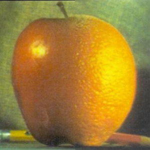

Using finite difference operators, I am able to identify edges in an image. I can do this by convolving the difference operators for the x and y directions, which I then use to compute the gradient of the image. The image created from the magnitude of the gradient at each point on the original image indicates where the edges are. You can see the gradient magnitude image as well an edge image generated by binarizing the former.


Though this method successfully identifies edges in the image, there is a lot of noise in the edge image. To resolve this, we can apply a gaussian filter to smooth over the noise in the original image. This can be done with one convolution for each direction by combining the gaussian filter with the finite difference operators. Doing it in one convolution versus two has the same result. Doing so creates an edge image that is less noisy. Below is a visualization of the gaussian convolved with the two difference operators, which is the kernel we apply to the cameraman image. Also below is the resulting edge image.
Adding the high frequency data of an image to itself ends up making the image look sharper. We can accomplish this by applying a high-pass filter to the image to extract the high frequency data and then adding this back to the original image. The images below are instances of this sharpening method.


This can be further observed in the following instance where an image of a lynx is blurred and then sharpened.


Here we see though the last image is sharper it is not the same as the original. This makes sense since information is lost when the image is blurred, and sharpening the image does not retrieve this information. As a result, we see the sharpened image does not properly reflect the colors of the original image and the fur seems more rough and spikey compared to the original.
If we add the low frequencies of one image to the high frequencies of another image, the resulting image will appear different based on how far you are from it. This is because at a distance we catch the lower frequencies and up close we catch the higher frequencies. Below are such hybrid images:

Note that the second image is a bit of a failure since the cat's head is smaller than the persons. This highlights how the two images need to cooperate on some level for the result to look good. We can examine these images in the frequency domain for further insight into this process. Below are the log magnitudes of the Fourier transform of two images (the man and the cat) before they are filtered, after they are filtered and then after they are combined.


What I found most interesting about these images is the effect of the high and low pass filter on the frequency domain. Both images are very noisy prior to filtering, and then the high pass filter increases this noise while the low pass filter reduces the noise and creates hyperbolic-esque curves.
In this section, I will be using multiresolution blending to merge two images together. This works by smoothly merging the two images at many frequency bands and then combining the bands. The frequency bands are generated by first creating a Gaussian stack for each image, and then computing the difference between consecutive elements in the stack to get the frequency bands. Then, a mask is applied to each band to smoothly block out part of the image. These masks are filtered to match the frequency band it is applied to. The figure below illustrates this process.
Combining all of the masked bands along with the final element of the Gaussian stacks gives us a nicely blended image. Below are some examples. Note that the mask can be any shape, allowing us to merge different parts of the images.
